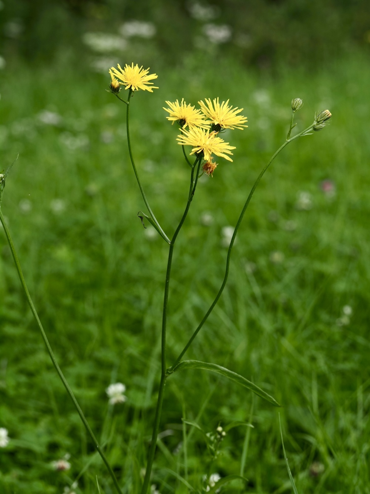

Wenn der Löwenzahn längst aus ist — der späte Bruder springt ein.


Der zweite Frühling im Sommer
Wer im Juni oder Juli noch gelb leuchtende „Löwenzähne“ auf einer Wiese sieht, hat meist den Wiesen-Pippau vor sich. Er sieht aus wie Löwenzahn, wartet aber bewusst auf eine spätere Saison — wenn sein größerer Verwandter schon längst Pusteblumen geworden ist. Diese Lückenstrategie ist clever: weniger Konkurrenz, mehr Insektenbesuch.
Pusteblume wie der große Bruder
Wie alle Korbblütler mit Federfuß bildet auch der Pippau am Ende des Sommers winzige „Fallschirme“ aus federförmigem Pappus. Der Wind trägt die Samen dann oft kilometerweit. Eine einzige große Pflanze produziert mehrere tausend Samen — daher die schnelle Ausbreitung auf neuen Wiesen.
Wissenswertes & Merksätze
Erkennen leicht gemacht
Aufrechter, oft verzweigter Stängel, kahl bis spärlich behaart, mit weißem Milchsaft beim Anschneiden. Blätter länglich-lanzettlich, Stängelblätter mit pfeilförmigen Öhrchen. Blütenkörbchen 2–3 cm, leuchtend gelb.
Indikator für extensive Wiesen
C. biennis verschwindet schnell, wenn Wiesen zu intensiv gemäht oder gedüngt werden. Wo er noch in Beständen wächst, ist die Wiesenpflege traditionell — wertvoll für Insekten und Vögel.